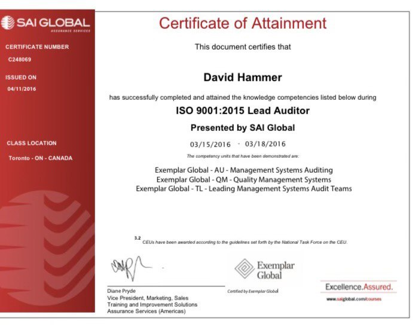

"Certified Lead Auditor of ISO 9001: Enhancing Quality and Driving Excellence with Expertise"
"We have over 35 years working with a new quality managment system and auditing."
Services
Set up your QMS to conform to the ISO9001:2015 standard to include the following:
- - ISO 9001:2015 Internal auditing per set schedule insuring all the requirements of the standard are met, as well as your own process are met and improving. These audit are geared to get your organization ready for as well as improving your Quality Management System.
- - Set up evaluation and analysis of data with tracking processes.
- select relevant data to track by department that is meaningful i.e. engineering tracking engineering change notices submitted and processed with emphasis on timing.
- - Supplier selection and evaluation programs working with the procurement group.
- auditing inspections survey submissions and control.
- - Objectives
- work with each department on the development of their objectives and tracking process.
- - Non-conforming output
- control, analysis and tracking method.
- - Control via use of NCR's
- review actions for effectives.
- - Corrective and Preventative.
- (Risk) actions process internal and external.
- - Development of a Quality Manuel as needed
- - Procedure development as needed.
- Decide what procedures are needed to conform to your own needs as well as Quality standards requirements.
- - Development of work instructions written, flow charts and visual aids as needed.
- - Development of a Cost of Quality Program
- this program allows you to see where resources are needed and captures cost of those resources, so they can be bettered controlled.
- - Development of a Business continuity plan development part of the RISK based thinking.
- this plan allows the business to continue as normal given the Disaster category.